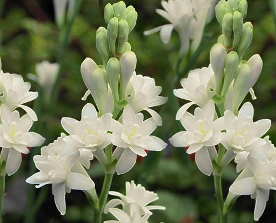

निशिगंधा विषयी माहिती

प्रस्तावना
निशिगंध हे एक व्यापारी फुलपीक असून, त्याची लागवड महाराष्ट्रात चांगल्या प्रकारे करता येते व हे पिक राज्यात
उत्कृष्ट रित्या उत्पादन देते. निशिगंधाची फुले हारामध्ये वापरली जातात. शिवाय विविध प्रकारच्या पुष्परचनेमध्ये
देखील या फुलांचे वेगळे स्थान आहे. यामध्ये सिंगल व डबल याप्रमाणे फुलांतील पाकळ्यांच्या रचनेप्रमाणे प्रकार पडतात.
सिंगल प्रकारच्या निशिगंधाची फुले अधिक जास्त सुवासिक असतात व त्यांचा वापर हारांमध्ये व गजऱ्यांमध्ये केला जातो.
डबल प्रकारच्या निशिगंधाच्या फुलदांड्याचा वापर पुष्परचनेमध्ये व बुकेमध्ये केला जातो. या फुलांचा वापर सुगंधी
द्रव्ये निर्माण करण्यासाठी देखील केला जातो.
जमीन व हवामान
निशिगंधाची लागवड कोणत्याही हवामानात करता येते. यासाठी पाण्याचा उत्तम निचरा होणारी कसदार जमीन चांगली मानवते.
पाण्याचा निचरा न होणाऱ्या जमिनीत कंद सडतात व झाड मरते. त्यामुळे दलदलीची व निचरा न होणारी जमीन या पिकासाठी निवडू
नये.
अभिवृद्धीचा प्रकार
निशिगंधाची लागवड कंदापासून करतात. एका कंदापासून दुसऱ्यावर्षी ५ ते ६ कंद विकसित होतात. त्यातील प्रत्येक कंद मुख्य
कंदापासून विलग (वेगळा) करून त्याची लागवड करतात. निशिगंधाची लागवड एप्रिल, मे किंवा सप्टेंबर ऑक्टोबर महिन्यात
करावी.
लागवड:-
निशिगंधाची लागवड जमिनीच्या प्रकारानुसार सपाट वाफ्यामुळे किंवा सरी-वरंब्यावर केली जाते. हलकी ते मध्यम व उत्तम
निचऱ्याची असेल तर ३ मी. X २ मी. आकारमानाच्या सपाट वाफ्यात ३० X २० सें.मी. अंतरावर ४ ते ५ सें.मी. खोल लागवड केली
जाते.
जमीन जर काही कसदार असेल तर ४५ X ३० सें.मी. अंतरावर वरंब्याच्या मध्यभागी ५ ते ६ सें.मी. खोल कंदाची लागवड
केली जाते. निशिगंधाचे हेक्टरी १ लाख ते १.५ लाख कंद लागतात. लागवड पूर्ण झाल्यावर ताबडतोब पाणी द्यावे.
लागवड पूर्व तयारी
ज्या ठिकाणी निशिगंधाची लागवड करावयाची आहे ती जमीन मार्च एप्रिल महिन्यात खोल नांगरावी. त्यानंतर दोन ते तीन वेळा
फणणी करून धसकटे, हरळीच्या कशा वेचाव्यात व जमीन स्वच्छ व भुसभुशीत करावी.
त्यानंतर हेक्टरी २५ ते ३० टन चांगले
कुजलेले शेणखत पसरावे व हेक्टरी ७५ किलो नत्र, ३०० किलो स्फुरद, व ३०० किलो पालाश लागवडीपूर्वीच जमीनीत मिसळून
द्यावे.
वरील सर्व सेंद्रिय व रासायनिक खते जमिनीत चांगले मिसळून घ्यावीत व नंतर जमिनीच्या प्रकारानुसार सपाट वाफे अथवा
सऱ्या पाडून रान बांधणी करावी.
खते
लागवडीनंतर ४५ दिवसांनी हेक्टरी ६५ किलो नत्र व ९० दिवसांनी ६० किलो नत्र द्यावे. निशिगंधास प्रति वर्षी २०० किलो
नत्र, ३०० किलो स्फुरद व ३०० किलो पालाश याप्रमाणे खते आवश्यक आहेत.
पाणी
निशिगंधाच्या पिकास हंगामनिहाय व जमिनीच्या मगदुराप्रमाणे ८ ते १० दिवसांनी पानाच्या पाळ्या द्याव्यात. निशिगंधास
तुषार सिंचनाद्वारे पाणीपुरवठा केल्यास उत्पादनास चांगली वाढ होऊ शकते.
आंतरमशागत:-
निशिगंध हे कंदवर्गीय पीक असल्याने वेळचे वेळी गवताची खुरपणी करून लागवडीचे क्षेत्र स्वच्छ व भुसभुशीत ठेवणे आवश्यक
आहे. सरी वरंब्यावरील लागवडीमध्ये जर वारंवार पाणी दिल्याने कंद उघडे पडू लागले तर दर ३ महिन्यांनी पिकाची खांदणी
करून मातीचा भर देणे आवश्यक आहे. प्रत्येक खांदणीच्या वेळी खते दिल्यास उत्पादनात चांगली वाढ होते.
जाती
डबल :- सुहासिनी
सिंगल :- शृंगार
सिंगल :- रजत, रेखा
व्हेरीगेटेड :- सुवर्ण रेखा
पीक संरक्षण
निशिगंधास मावा, फुलकिडे व अळी या किडींचा व फुलदांड्याची कुज व पानांवरील ठिपक्या रोगांचा मुख्यत्वेकरुन पावसाळी
प्रादुर्भाव दिसून येतो. त्यासाठी कोणत्याही एका कीटकनाशकाची / बुरशीनाशकाची फवारणी करावी.
कुज व पानावरील ठिपके
प्रत्येक फवारणीमध्ये ५ मिली / १० लिटर पाणी याप्रमाणे स्टिकर्स मिसळावे म्हणजे किडी व रोगांचे चांगले नियंत्रण
मिळते.
उत्पादन:-
निशिगंधापासून प्रति हेक्टर प्रतिवर्ष ५० क्विन्तल (५ मी. टन) सुटी फुले अथवा सुमारे २.५ लाख फुलदांडे याप्रमाणे
उत्पादन मिळते.
हे लक्षात ठेवा
कंदाची लागवड हलक्या जमिनीत १५ ते १७.५ से. मी. व भारी जमिनीत १० ते १२ से. मी. खोल करावी.
लागवडीनंतर ४५ ते ९० दिवसांनी नत्र युक्त खते दिल्यास झाडांची वाढ चांगली होऊन उत्पादन चांगले मिळते.
कंदाची उगवण सुरु असताना जास्त पाणी देणे टाळावे.